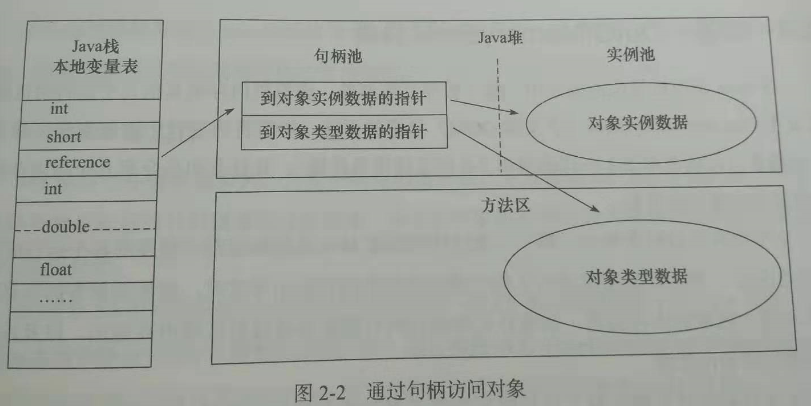

注意：参照深入理解java虚拟机 (推荐阅读：内容较为枯燥，适合静下心来，耐住性子品读)
第一章 走进java
-- 本章可不阅
1.跨平台：
一次编写，到处运行 (write once run anywhere)
2.openJDK与oracle JDK区别
openJDK 开源、oracle JDK 商用闭源
大致代码均公用，除了极少sun公司也无权开放的代码外，基本一致
第二部分 自动内存管理机制
第二章 java内存区域与内存溢出异常
1.内存动态分配、垃圾收集技术
2.虚拟机自动内存管理
->不容易出现内存泄露和内存溢出问题
->一旦出现内存泄露和溢出方面问题，如果不了解虚拟机如何使用内存，排查错误异常艰难
3.运行时数据区域
包括：方法区(Method Aera)、虚拟机栈(VM stack)、本地方法栈(native method stack)
堆(heap)、程序计数器(program counter register)
3.1小结：
程序计数器：程序执行位置的标志位(由于线程切换)
虚拟机栈：描述java方法执行的内存模型(栈帧[主要包含堆栈的栈内存]) (局部变量表：存储对象引用)
本地方法栈：HotSpot虚拟机使用的本地Native方法
java堆：唯一目的就是存放对象实例
方法区：(class类内元素)存储已被虚拟机加载的类信息、常量、静态变量、即时编译器编译后的代码等数据
4.程序计数器
4.1.区域 (注意)：
是一块较小的内存空间，此内存区域是唯一一个在java虚拟机规范中没有规定outOfMemoryError情况的区域
即：不会出现内存溢出现象
4.2.概念(是什么?)：
可以看做当前线程所执行的字节码的行号标志位
简单来讲就是程序执行位置的标志位(由于线程切换)
4.3.引申：
java虚拟机的多线程：通过线程轮流切换并分配处理器执行时间的方式来实现的
4.4.为何会出现“程序计数器”
任何一个确定的时刻，一个处理器(多核处理器指一个内核)都只会执行一条线程中的指令
为了线程切换后能够恢复到正确的执行位置，故每条线程都需要一个独立的程序计数器
且每条线程之间计数器互不影响，独立存储
4.5.字节码解释器
字节码解释器需要依赖程序计数器，改变程序计数器的值，来选取吓一跳需要执行的字节码指令
分支、循环、跳转、异常处理、线程恢复等
4.6.程序计数器记录的是什么
如果当前线程正在执行一个java方法：计数器记录的是正在执行的虚拟机字节码指令的地址
如果正在执行的是Native方法，这个计数器的值为空(undefined)
5.java虚拟机栈
5.1.生命周期
同程序计数器相同，线程私有，java虚拟机栈的生命周期与线程相同
5.2.描述对象(作用)
虚拟机栈描述的是java方法执行的内存模型
每个方法在执行的同时都会创建一个栈帧(stack frame)
栈帧：用于存储：局部变量表(堆栈的栈)、操作数栈、动态链接、方法出口等信息
每一个方法从调用直至执行完成，都对应着一个栈帧在虚拟机栈中从入栈到出栈的过程
5.3.栈帧概念
每一个方法运行的同时都会创建一个栈帧，结构为栈，联系为帧，方法调用方法，帧挨着帧，故为栈帧
5.3.java内存
大致可以分为堆内存(Heap)和栈内存(stack)，因为这两块内存区域与对象内存分配关系最为密切
而栈内存(stack)：指的就是运行时数据区域中虚拟机栈中的局部变量表部分
5.4.局部变量表：
存放了编译期间可知的8大基本数据类型(boolean、byte、char、short、int、float、long、double)
对象引用(reference类型)和returnAddress类型
5.5.局部变量表的大小
局部变量表所需的内存空间在编译期间完成分配，当进入一个方法时，
该方法需要在帧中分配多大的局部变量空间完全确定,且在方法运行期间不会改变局部变量表的大小
小结：方法运行期间，栈的大小不会改变，因为在编译期间已经固定
5.6.java虚拟机规范
第一种异常：当线程请求的栈深度大于虚拟机锁允许的深度，将抛出stackoverflowerror异常
第二种异常：当动态扩展的虚拟机，扩展是无法申请到足够的运行时内存，将抛出outofmemoryerror异常
6.本地方法栈
6.1.本地方法栈和虚拟机栈区别
虚拟机栈：为虚拟机执行java方法(字节码)服务
本地方法栈：为虚拟机使用到的Native方法服务
6.2.虚拟机规范
对本地方法栈中方法使用的语言、使用方式、数据结构并没有强制规定
比如：Sun HotSpot虚拟机直接将本地方法栈和虚拟机栈合二为一
所以和虚拟机栈一样，本地方法栈区域也会抛出stackoverflowerror和outofmemoryerror异常
6.3.HotSpot虚拟机栈
对于HotSpot虚拟机栈：将虚拟机栈和本地方法栈合二为一，所以-Xoss虽然是设置本地方法栈大小
但实际并无效果，栈容量只由-Xss参数设定
7.java堆
7.1.生命周期
java堆(java heap)是java虚拟机锁管理的内存中最大的一块
java堆被所有线程共享的一块内存区域，虚拟机启动时创建
7.2.作用
java堆内存区域的唯一目的就是存放对象实例，(不是所有)几乎所有的对象实例都在这里分配内存
7.3.java堆 ≈ GC堆
java堆是垃圾收集器管理的主要区域，因此很多时候也被称作GC堆
现在垃圾收集器基本都采用分代收集算法
7.4.小提示
无论如何划分java对的内存区域，都与存放的内容无关，无论哪个区域，存储的都是对象实例
进一步的划分的目的：是为了更好的回收内存，或者更快的分配内存
7.5.java虚拟机规范
java堆可以处理物理上不连续的内存空间，只要逻辑上是连续的即可
当前主流的虚拟机都是按照可扩展来实现的(通过-Xmx和-Xms控制)
如果堆内没有内存完成实例分配，并且堆也无法再扩展时，将会抛出outofmemoryerror错误
8.方法区
8.1.生命周期
方法区和java堆一样，是各个线程共享的内存区域
8.2.作用
存储已被虚拟机加载的类信息、常量、静态变量、即时编译器编译后的代码等数据
8.3.方法区 ≈ 非堆(Non-Heap)
8.4.方法区 ≈ 永久代
GC分代收集使用永久代来实现方法区，Hotspot虚拟机的垃圾收集器就可以像管理其他java堆一样
管理这部分内存，且能够省去专门为方法区编写内存管理代码，但是现在看来容易产生内存溢出问题
所以目前已有放弃永久代并逐步采用Native Memory来实现方法区的规划
8.5.方法区垃圾收集
和java堆一样不需要连续的内存和可以选择固定大小或者可扩展外，可以选择不实现垃圾收集
8.6.方法区的垃圾收集目标
主要是针对常量池的回收和堆类型的卸载(类型卸载条件较为苛刻)
8.7.java虚拟机规范
当方法区无法满足内存分配要求时，将抛出outmemoryerror异常
9.运行时常量池
9.1.从属
运行时常量池是方法区的一部分
9.2.作用
用于存放编译器生成的各种字面量和符号引用和直接引用
9.3.java虚拟机规范
由于从属与方法区，所以当常量池无法申请到足够的内存时会抛出outofmemoryerror异常
10.直接内存
10.1.从属
直接内存并不是虚拟机运行时数据区的一部分，也不是java虚拟机规范中定义的内存区域
10.2.直接内存与NIO之间的关系
10.3.内存限制
直接内存的分配并不会收到java堆大小的限制，但是既然是内存，
就会受到本机总内存(RAM以及SWAP交换分区)以及处理器寻址空间的限制
10.4.outofmemoryeror异常
由于不属于java虚拟机规范中定义的内存区域，所以不需要遵守java虚拟机规范
但是服务器管理员在设置虚拟机参数时，会根据实际内存设置-Xmx等参数，经常忽略直接内存
所以值得各个内存区域总和大于物理内存限制(物理内存和操作系统级别限制)，从而outofmemoryError
11.HotSpot虚拟机
11.1.环境
HotSpot虚拟机在java堆中对象分配、布局、访问过程
11.2.对象创建
11.1.1.创建语法
Animal animal = new Animal();
11.1.2.创建过程 (new)
当虚拟机遇到new关键字时
-->①类加载检查-->首先去检查这个指令的参数是否能在常量池中定位到一个类的符号引用
-->其次检查这个符号引用代表的类是否已被加载、解析、和初始化-->如果没有需要执行类加载过程
-->②分配对象内存-->接下来虚拟机将为新生对象分配内存，对象所需的内存大小在类加载完成后
便可以完全确定-->对象分配空间的任务≈把一块大小确定的内存从java堆中划分出来
-->划分区域，分两种情况
-->③指针碰撞-->如果java堆中内存是绝对规整的，所有用过的内存放一边，空闲的内存放另一边，
中间放着一个指针作为分界点的指示器,那所分配内存就是指针向空闲的那边挪动一段与对象大小相等的距离
-->④空闲列表-->如果java堆中内存并不是规整的，已使用的内存和空闲的内存相互交错，那就没有办法
进行指针碰撞了，虚拟机就必须维护一个列表，记录哪些内存块是可用的，在分配的时候从列表中找到一块
足够大的空间划分给对象实例，并更新列表上的记录
-->如何决定使用哪种分配方式
分配方式是由java堆是否规整决定，而java堆是否规整又由垃圾收集器是否带有压缩整理功能决定
一、使用seial、parnew等待compact过程的收集器时，系统采用的分配算法是指针碰撞
二、使用cms这种基于mark-sweep算法的收集器时，通常采用空闲列表
11.1.3.并发下分配内存空间的问题
一、虚拟机采用cas配上失败重试的方式保证更新操作的原子性
二、内存分配按照线程划分在不同的空间中进行，即每个线程在java堆中预先分配一小块内存(本地线程分配缓冲TLAB)
虚拟机是否使用TLAB，可以通过-XX:+/-UseTLAB参数设置
-->⑤初始化-->内存分配完成后，虚拟机需要将分配到的内存空间都初始化为零值(不包括对象头)
初始化操作：保证了对象实例字段在java代码中可以不付出是指就可以直接使用
程序能访问到这些字段数据类型所对应的的零值
-->⑥最后虚拟机要对对象进行必要的设置，例如这个对象是哪个类的实例，如何才能找到类的元数据信息，
对象的哈希码，对象的GC粉黛年龄，是否启用偏向锁等信息(这些信息都是放在对象头中.....)
-->⑦此时一个对象已经产生了
11.3.对象的内存布局
11.3.1.区域分布 (类似于链表)
HotSpot虚拟机中，对象在内存中存储的布局可以分为3块区域：对象头、实例数据、对齐填充
11.3.2.对象头
11.3.2.1.第一部分
用于存储对象自身的运行时数据(哈希码(hashcode)、GC分代年龄、锁状态标志、线程持有的所
偏向线程ID、偏向时间戳)
11.3.2.2.第二部分
类型指针(对象指向他的类元数据的指针)，虚拟机通过这个指针来确定这个对象是哪个类的实例
查找对象的元数据信息并不一定要经过对象本身
如果对象是一个java数组，那么在对象头中还必须有一块用于记录数组长度的数据，因为虚拟机
可以通过普通java对象的元数据信息确定java对象的大小，但是从数组的元数据中却无法确定数组大小
11.3.3.实例数据
实例数据部分是对象真正存储的有效信息，也是在程序代码中所定义的不同类型的字段内容，无论父类继承还是自身属性
对象实例属性的存储顺序
会受到虚拟机分配策略参数和字段在java源码中定义顺序的影响
HotSpot虚拟机默认的分配策略为：longs/doubles、ints、shorts/chars、bytes/booleans、oop(普通对象引用)
从分配策略来看，相同宽度的字段总是被分配到一起，所以子类中较窄的变量可能和父类中变量并列
11.3.4.对齐填充
第三部分对齐填充并不是必然存在，仅仅作为占位符
由于HotSpot虚拟机的自动内存管理系统要求对象的大小必须是8字节的整数倍，所以当对象实例数据部分没有对齐
就需要通过对齐填充补全
11.4.对象的访问定位
11.4.1.使用对象
建立对象就是为了使用对象
java程序需要通过栈上的reference数据来操作堆上的具体对象，由于reference类型的java虚拟机规范中
只规定了一个指向对象的引用，并没有定义这个引用应该通过何种方式去定位、访问堆中的对象的具体位置，
所以对象的访问方式取决于虚拟机的实现
目前主流的对象访问方式
使用句柄、直接指针
一、使用句柄
java堆中将会划分一块内存来作为句柄池，reference中存储的就是对象的句柄地址，而句柄中包含了
对象实例数据与类型数据各自的具体地址信息

二、直接指针
java堆对象的布局中就必须考虑如何放置类型数据的相关信息，reference中存储的直接就是对象地址
 11.4.1.1.两种对象的访问方式区别
句柄：使用句柄最大的好处就是reference中存储的是未定的句柄地址，在对象被移动
(垃圾收集时移动对象是非常普遍的行为)时，只会改变句柄中的实例数据指针，而reference不需要修改
直接指针：直接指针最大的好处即使速度更快，它节省了一次指针定位的时间开销，由于对象的访问在java中
非常频繁，因此这类开销积少成多后也是一项非常可观的执行成本
对于HotSpot虚拟机而言，则是使用第二种方式进行对象访问，其他也有使用句柄来访问的
11.5.outofmemoryerror异常
简称：OOM
11.5.1.
java虚拟机规范中：除了程序计数器外，虚拟机内存的其他几个运行时数据区域都有可能发生OOM异常的可能
(java虚拟机栈、本地方法栈、java堆、方法区、运行时常量池、直接内存)均有可能
11.5.2.本章节目的
一、通过代码验证java虚拟机规范中描述的各个运行时区域存储的内容
二、希望在工作中遇到实际的内存溢出异常时，能够根据异常的信息快速判断哪个区域的内存溢出，知道什么样的代码
可能导致这些区域内存溢出，以及出现这些异常后该如何处理
三、对于OOM的研究，下面都是基于sun公司的HotSpot虚拟机，调试代码不要忽略-Xms/-Xmx/-Xmn这些参数
11.5.3.java堆溢出
一、如何造成java堆溢出
java堆用于存储对象实例，只要不断地创建对象，并且保证GC Roots到对象之间有可达路径来避免垃圾回收机制
清除这些对象，那么在对象数量达到最大堆的容量限制后就会产生内存溢出异常
二、具体代码
限制java堆大小为20M，不可扩展(将堆的最小值-Xms参数与最大值-Xmx参数设置为一样即可避免堆自动扩展)
public class HeapOOM {
static class OOM{}
public static void main(String [] args){
List
11.4.1.1.两种对象的访问方式区别
句柄：使用句柄最大的好处就是reference中存储的是未定的句柄地址，在对象被移动
(垃圾收集时移动对象是非常普遍的行为)时，只会改变句柄中的实例数据指针，而reference不需要修改
直接指针：直接指针最大的好处即使速度更快，它节省了一次指针定位的时间开销，由于对象的访问在java中
非常频繁，因此这类开销积少成多后也是一项非常可观的执行成本
对于HotSpot虚拟机而言，则是使用第二种方式进行对象访问，其他也有使用句柄来访问的
11.5.outofmemoryerror异常
简称：OOM
11.5.1.
java虚拟机规范中：除了程序计数器外，虚拟机内存的其他几个运行时数据区域都有可能发生OOM异常的可能
(java虚拟机栈、本地方法栈、java堆、方法区、运行时常量池、直接内存)均有可能
11.5.2.本章节目的
一、通过代码验证java虚拟机规范中描述的各个运行时区域存储的内容
二、希望在工作中遇到实际的内存溢出异常时，能够根据异常的信息快速判断哪个区域的内存溢出，知道什么样的代码
可能导致这些区域内存溢出，以及出现这些异常后该如何处理
三、对于OOM的研究，下面都是基于sun公司的HotSpot虚拟机，调试代码不要忽略-Xms/-Xmx/-Xmn这些参数
11.5.3.java堆溢出
一、如何造成java堆溢出
java堆用于存储对象实例，只要不断地创建对象，并且保证GC Roots到对象之间有可达路径来避免垃圾回收机制
清除这些对象，那么在对象数量达到最大堆的容量限制后就会产生内存溢出异常
二、具体代码
限制java堆大小为20M，不可扩展(将堆的最小值-Xms参数与最大值-Xmx参数设置为一样即可避免堆自动扩展)
public class HeapOOM {
static class OOM{}
public static void main(String [] args){
List list = new ArrayList();
while(true){
list.add(new OOM())
}
//类似于 (无限循环)
for(;;){
list.add(new OOM())
}
}
}
运行结果：
java.lang.OutOfMemoryError:java heap space
三、如何应对
首先要判断到底是出现了内存泄露 (程序中已动态分配堆内存，由于某种原因未释放或无法释放) 还是内存溢出
内存泄露：
通过工具查看泄露对象到GC Roots的引用链，于是就能找到泄露对象是通过怎样的路径与GC Roots相关联
并导致垃圾收集器无法自动回收他们，掌握了泄露对象的类型信息及GC Roots引用链的信息，就可以
准确的定位出泄露代码的位置
内存溢出：
内存中的对象确实且必须还存活，那就应当检查虚拟机的堆参数(-Xmx/-Xms)，与机器物理内存对比看是否
还可以调大，从代码上检查是否存在某些对象生命周期过长，持有状态时间过长情况，尝试减少程序运行期
的内存消耗
11.5.4.虚拟机栈和本地方法栈溢出
一、如何造成虚拟机栈和本地方法栈溢出
1.如果线程请求的栈深度大于虚拟机锁允许的最大深度，将抛出stackoverflowerror异常
2.如果虚拟机在扩展栈时，无法申请到足够的内存空间，则抛出outofmemoryerror异常
3.以上两种情况，已使用栈空间太大或是内存空间太小，本质上都是对同一件事的两种描述?
二、如何产生
public class VMStackSOF{
private int stackLength = 1;
public void stackLeak(){
stackLength++;
stackLeak();
}
public static void main(String [] args) throws Throwable{
VMStackSOF oom = new VMStackSOF();
try{
oom.stackLeak();
}catch(Throwable e){
printf(“stack length："+oom.stackLength);
throw e;
}
}
}
三、结论
单个线程下，无论是由于栈帧太大还是虚拟机栈容量太小，当内存无法分配的时候，
虚拟机抛出的都是stackoverflowerror异常，多线程可以出现内存溢出
四、注意
1.每个进程都有操作系统的内存限制(2G/32bit系统)
2.而运行时内存宽泛来说一共3部分：方法区、堆、程序计数器(忽略不计)、虚拟机栈+本地方法栈
其中一个内存溢出，可以调整其他内存区域的大小